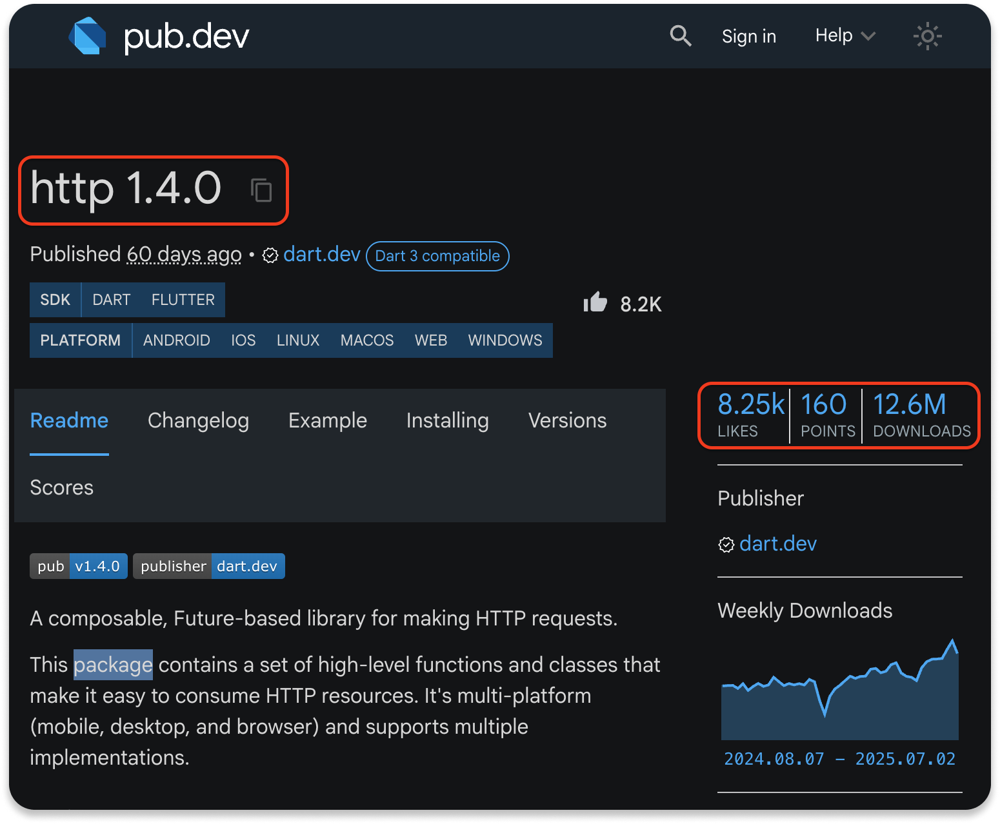
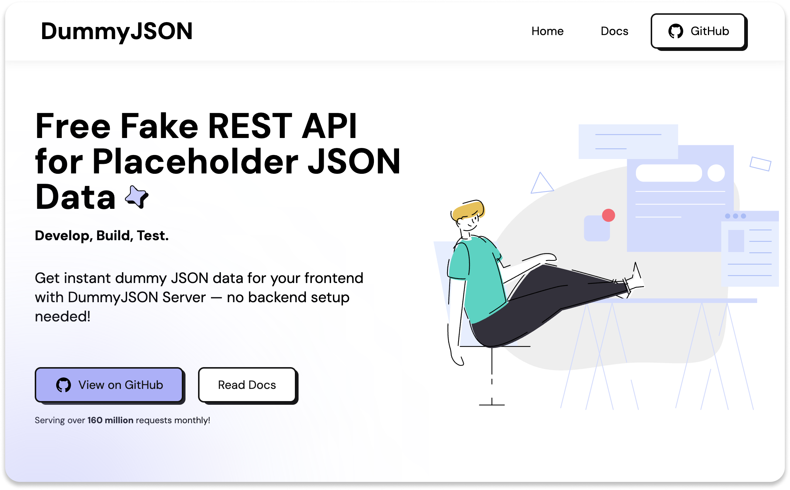
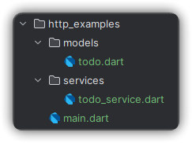
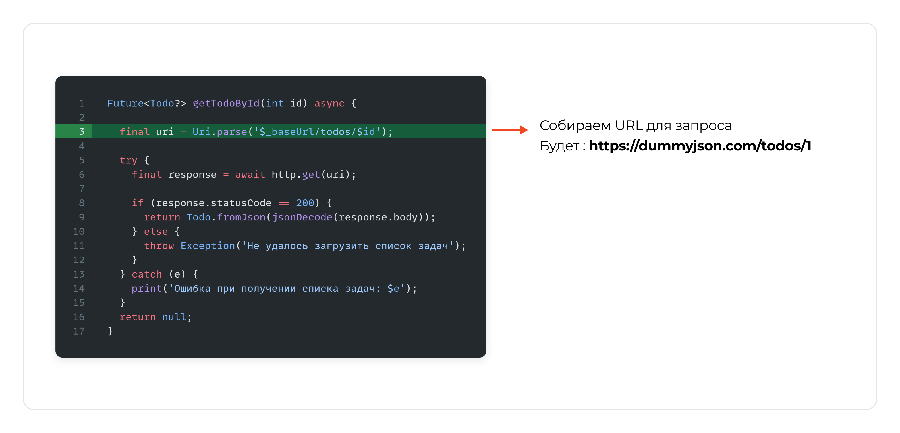
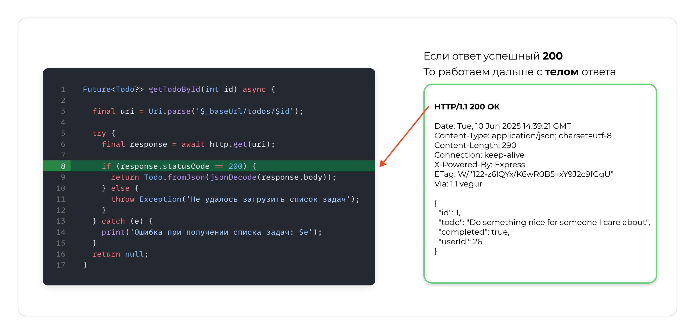
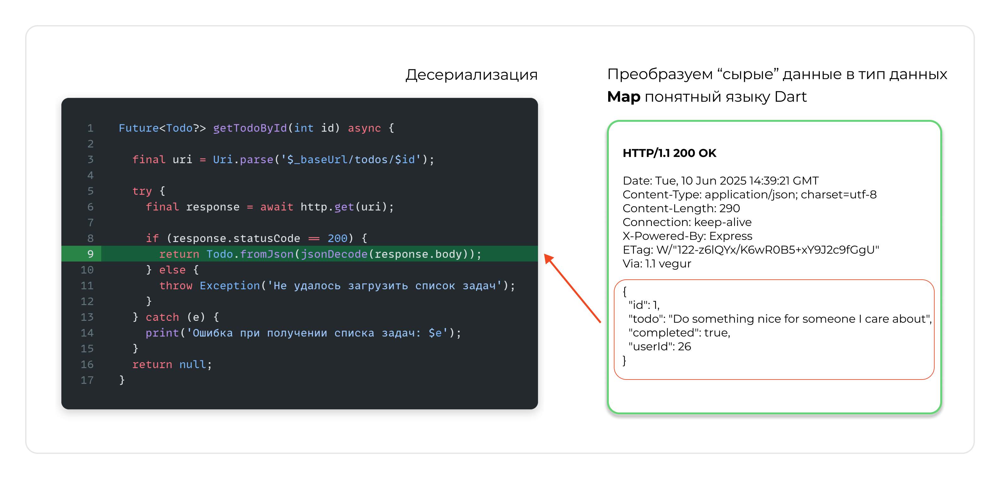
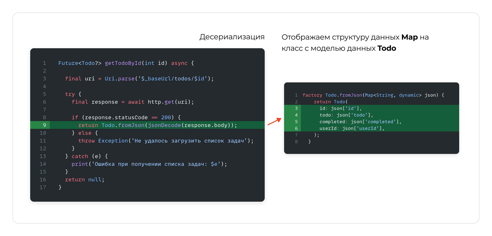
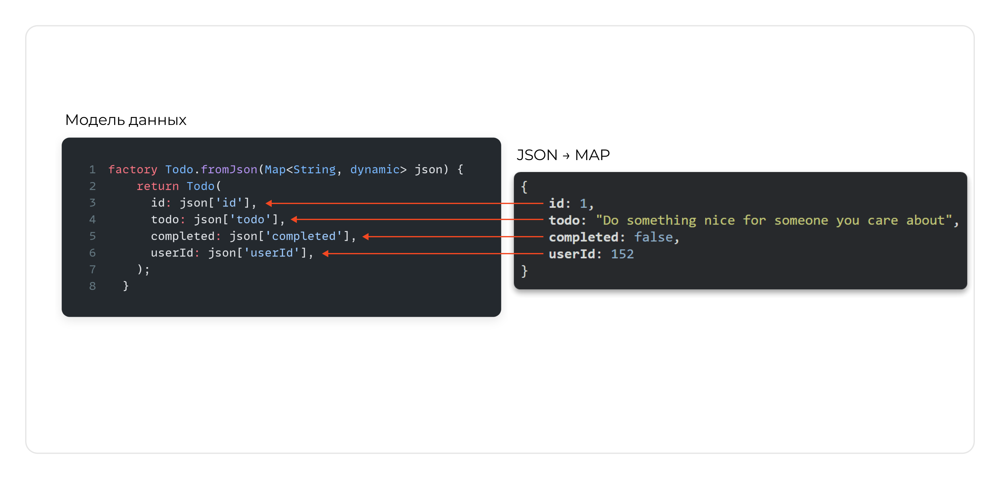
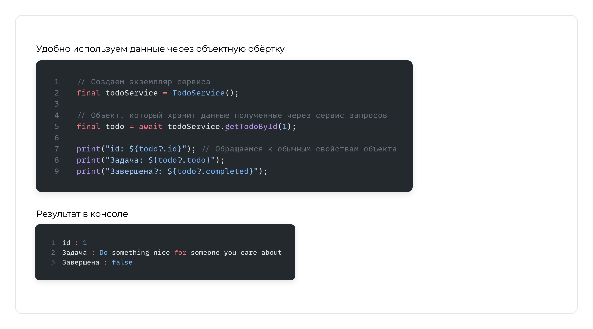

HTTP CRUD (Пакет http)
На прошлом занятии использовался встроенный dart:io HttpClient. Это мощный, но низкоуровневый инструмент.
Для большинства повседневных задач удобнее использовать пакеты более высокого уровня.
Самые популярные это пакеты http и dio
Почему лучше пакеты?
- Простота: Код становится короче и читабельнее.
- Удобство: Меньше ручной работы с заголовками и телом запроса.
- Кроссплатформенность: Легко работает как в Flutter (мобильные, веб), так и в консольных приложениях.
Минусы?
- Зависимость от стороннего разработчика пакета
Установка: добавим в файл pubspec.yaml:
YAML


dependencies:
http: ^1.4.0
Или установить через консоль командой
Терминал
flutter pub add http
// или
dart pub add http
dummyjson
Для разнообразия возьмём другой API, например с сервиса https://dummyjson.com/
Используем сырые данные для обработки запросов
1. GET-запрос: Читаем данные с сервера
Dart
// Функция для выполнения GET-запроса
Future<void> getData(String url) async {
try {
// Отправляем GET-запрос и ждем ответ. Код стал проще!
final response = await http.get(Uri.parse(url));
if (response.statusCode == 200) {
final data = jsonDecode(response.body);
print(data);
} else {
// Если сервер вернул ошибку
print('Ошибка при GET-запросе: ${response.statusCode}');
print('Тело ответа: ${response.body}');
}
} catch (e) {
print('Исключение при GET-запросе: $e');
}
}
Dart
import 'dart:convert';
import 'package:http/http.dart' as http; // Импорт пакета http с псевдонимом
void main() async {
final baseUrl = 'https://dummyjson.com';
await getData('$baseUrl/todos/1'); // Получаем пост с ID = 1
await getData('$baseUrl/todos/900000'); // Получаем ошибку 404
}
Вывод
{
id: 1,
todo: Do something nice for someone you care about,
completed: false,
userId: 152
}
Ошибка при GET-запросе: 404
Тело ответа: {"message":"Todo with id '900000' not found"}
2. POST-запрос: Создаем новый пост
Dart
// Функция для выполнения POST-запроса
Future<void> postData(String url, Map<String, dynamic> data) async {
try {
// Отправляем POST-запрос
final response = await http.post(
Uri.parse(url),
// Обязательно указываем, что отправляем данные в формате JSON
headers: {
'Content-Type': 'application/json; charset=UTF-8',
},
body: jsonEncode(data), // Преобразуем данные в строку JSON !!!
);
// 201 - статус код успешного создания ресурса
if (response.statusCode == 201) {
final responseData = jsonDecode(response.body);
print('Todo успешно создан!');
print(responseData);
} else {
print('Ошибка при POST-запросе: ${response.statusCode}');
print('Тело ответа: ${response.body}');
}
} catch (e) {
print('Исключение при POST-запросе: $e');
}
}
jsonEncode(data)
Нельзя отправить Map напрямую.
Его нужно сериализовать - превратить в строку формата JSON.
Dart
void main() async {
final baseUrl = 'https://dummyjson.com';
await postData('$baseUrl/todos/add', {
'todo': 'make a ai project',
'completed': false,
'userId': 1}
);
}
Вывод
Todo успешно создан!
{
id: 255,
todo: make a ai project,
completed: false,
userId: 1
}
3. PUT-запрос: Обновляем существующий todo
Dart
// Функция для выполнения PUT-запроса
Future<void> putData(String url, Map<String, dynamic> data) async {
try {
// Отправляем PUT-запрос
final response = await http.put(
Uri.parse(url),
headers: {
'Content-Type': 'application/json; charset=UTF-8',
},
body: jsonEncode(data),
);
if (response.statusCode == 200) {
final responseData = jsonDecode(response.body);
print('Todo успешно обновлён!');
print(responseData);
} else {
print('Ошибка при PUT-запросе: ${response.statusCode}');
print('Тело ответа: ${response.body}');
}
} catch (e) {
print('Исключение при PUT-запросе: $e');
}
}
Dart
void main() async {
final baseUrl = 'https://dummyjson.com';
await putData('$baseUrl/todos/1', {
'todo': 'Update todo',
'completed': true,
'userId': 1
});
}
Вывод
Todo успешно обновлён!
{id: 1, todo: Update todo, completed: true, userId: 1}
4. DELETE- запрос: Удаляем существующий todo
Dart
// Функция для выполнения DELETE-запроса
Future<void> deleteData(String url) async {
try {
// DELETE-запрос не имеет тела, только URL
final response = await http.delete(Uri.parse(url));
if (response.statusCode == 200) {
print('Ресурс по адресу $url успешно удален.');
} else {
print('Ошибка при DELETE-запросе: ${response.statusCode}');
}
} catch (e) {
print('Исключение при DELETE-запросе: $e');
}
}
Dart
void main() async {
final baseUrl = 'https://dummyjson.com';
await deleteData('$baseUrl/todos/1');
}
Вывод
Ресурс по адресу https://dummyjson.com/todos/1 успешно удален.
Используем модель данных для обработки запросов
Работать с Map<String, dynamic> неудобно и небезопасно (легко опечататься в ключе). В реальных проектах создают классы-модели на которые отображаются реальные данные.
Это делает ваш код гораздо чище, надежнее и проще для понимания.
Сделаем небольшую "архитектуру" в проекте

Файл models/todo.dart
Dart
class Todo {
final int id;
final String todo;
final bool completed;
final int userId;
Todo({
required this.id,
required this.todo,
required this.completed,
required this.userId,
});
// Фабричный конструктор: создает экземпляр Todo из JSON (Map)
// Это нужно для десериализации ответа от сервера.
factory Todo.fromJson(Map<String, dynamic> json) {
return Todo(
id: json['id'],
todo: json['todo'],
completed: json['completed'],
userId: json['userId'],
);
}
// Метод для преобразования объекта Todo обратно в JSON (Map)
// Это нужно для сериализации данных при отправке на сервер (POST, PUT).
Map<String, dynamic> toJson() {
return {
'todo': todo,
'completed': completed,
'userId': userId,
};
}
// Переопределяем toString для удобного вывода в консоль
@override
String toString() {
return '\n\tid: $id,\n\ttodo: "$todo",\n\tcompleted: $completed,\n\tuserId: $userId';
}
}
Сериализация
Сериализация - это процесс преобразования структуры данных или объекта из его представления в памяти (например, объекта в языке программирования) в формат, который можно легко сохранить или передать, а затем восстановить.
Чаще всего этим форматом является строка (например, JSON, XML) или поток байтов.
Представьте это как упаковку вещей в коробку для переезда:
- Вещи это ваш объект или структура данных в памяти компьютера.
- Упаковка в коробку это процесс сериализации.
- Коробка с упакованными вещами это сериализованные данные (например, JSON).
Десериализация
Десериализация - это обратный процесс. Это преобразование данных из сохраненного или переданного формата (например, строки JSON) обратно в структуру данных или объект в памяти.
Продолжая аналогию с переездом:
- Коробка с упакованными вещами - это ваши сериализованные данные.
- Распаковка вещей из коробки - это процесс десериализации.
- Распакованные вещи - это восстановленный объект или структура данных в памяти.







Файл services/todo_service.dart
Dart
import 'dart:convert';
import 'package:http/http.dart' as http;
import '../models/todo.dart';
/// Сервисный класс для работы с API
/// Инкапсулируем всю логику сетевых запросов в одном классе.
/// Это делает код более чистым и переиспользуемым.
class TodoService {
final String _baseUrl = 'https://dummyjson.com';
// GET получить задачу по id
Future<Todo?> getTodoById(int id) async {
final uri = Uri.parse('$_baseUrl/todos/$id');
try {
final response = await http.get(uri);
if (response.statusCode == 200) {
return Todo.fromJson(jsonDecode(response.body));
} else {
throw Exception('Не удалось загрузить список задач');
}
} catch (e) {
print('Ошибка при получении списка задач: $e');
}
return null;
}
// POST добавить новую задачу
Future<Todo?> addTodo({String todoText = "", int userId = 0}) async {
final uri = Uri.parse('$_baseUrl/todos/add');
try {
final response = await http.post(
uri,
headers: {'Content-Type': 'application/json'},
body: jsonEncode({
'todo': todoText,
'completed': false,
'userId': userId,
}),
);
if (response.statusCode == 200 || response.statusCode == 201) {
// Преобразуем JSON-объект в объект класса Todo
return Todo.fromJson(jsonDecode(response.body));
} else {
print('Ошибка при добавлении задачи: ${response.statusCode}');
return null;
}
} catch (e) {
print('Исключение при добавлении задачи: $e');
return null;
}
}
// PUT обновление задачи
Future<Todo?> updateTodo({int todoId = 0, bool isCompleted = false}) async {
final uri = Uri.parse('$_baseUrl/todos/$todoId');
try {
final response = await http.put(
uri,
headers: {'Content-Type': 'application/json'},
body: jsonEncode({
'completed': isCompleted,
}),
);
if (response.statusCode == 200) {
return Todo.fromJson(jsonDecode(response.body));
} else {
print('Ошибка при обновлении задачи: ${response.statusCode}');
return null;
}
} catch (e) {
print('Исключение при обновлении задачи: $e');
return null;
}
}
// DELETE удаление задачи
Future<Todo?> deleteTodo(int todoId) async {
final uri = Uri.parse('$_baseUrl/todos/$todoId');
try {
final response = await http.delete(uri);
if (response.statusCode == 200) {
final deletedTodo = Todo.fromJson(jsonDecode(response.body));
return deletedTodo;
} else {
print('Ошибка при удалении задачи: ${response.statusCode}');
return null;
}
} catch (e) {
print('Исключение при удалении задачи: $e');
return null;
}
}
}
Файл main.dart
Dart
Future<void> main() async {
// Создаем экземпляр сервиса
final todoService = TodoService();
// 1. CREATE: Добавляем новую задачу
print('\nСоздаем новую задачу...');
final newTodo = await todoService.addTodo(
todoText: 'Изучить Dart и Flutter',
userId: 5,
);
print('✅ Задача успешно создана: $newTodo');
// 2. UPDATE: Обновляем статус задачи
print('\nОбновляем статус задачи...');
final updatedTodo = await todoService.updateTodo(
todoId: 2,
isCompleted: true,
);
print('✅ Задача успешно обновлена: $updatedTodo');
// 3. DELETE: Удаляем задачу
print('\nУдаляем задачу...');
final deletedTodo = await todoService.deleteTodo(2);
print('✅ Задача успешно удалена: $deletedTodo');
// 4. GET: Получаем задачу по ID
print('\nПолучаем задачу...');
final todo = await todoService.getTodoById(1);
print('✅ Задача успешно получена: $todo');
print("id: ${todo?.id}");
print("Задача: ${todo?.todo}");
print("Завершена?: ${todo?.completed}");
}
Вывод
Создаем новую задачу...
✅ Задача успешно создана:
id: 255,
todo: "Изучить Dart и Flutter",
completed: false,
userId: 5
Обновляем статус задачи...
✅ Задача успешно обновлена:
id: 2,
todo: "Memorize a poem",
completed: true,
userId: 13
Удаляем задачу...
✅ Задача успешно удалена:
id: 2,
todo: "Memorize a poem",
completed: true,
userId: 13
Получаем задачу...
✅ Задача успешно получена:
id: 1
Задача: Do something nice for someone you care about
Завершена?: false



